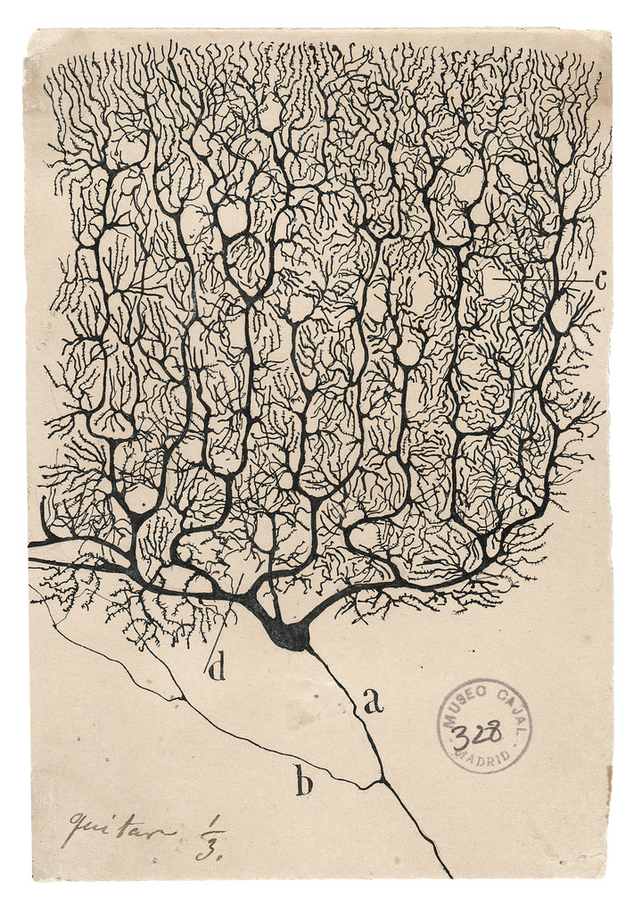
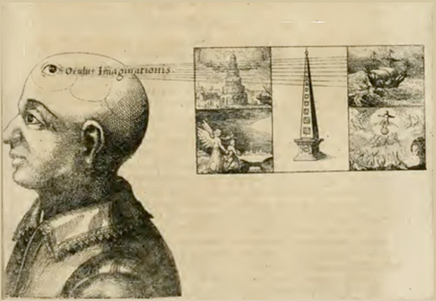
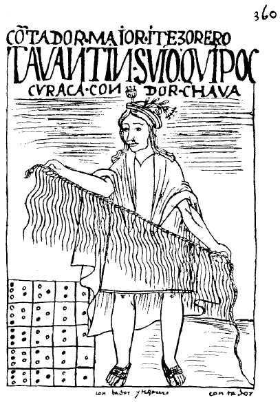
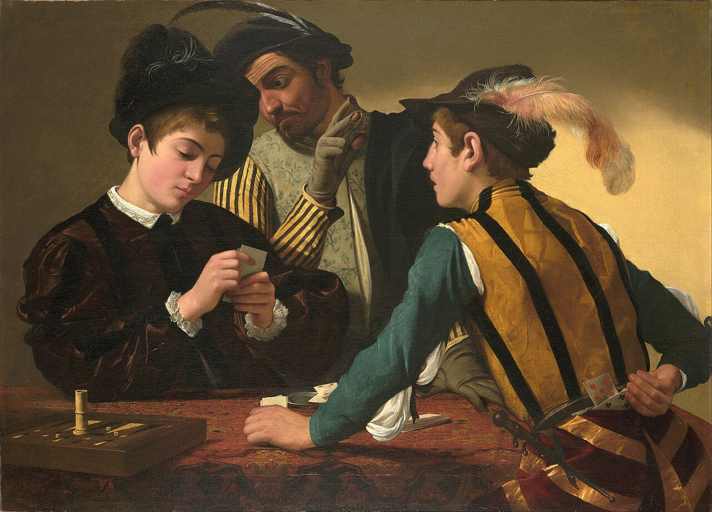
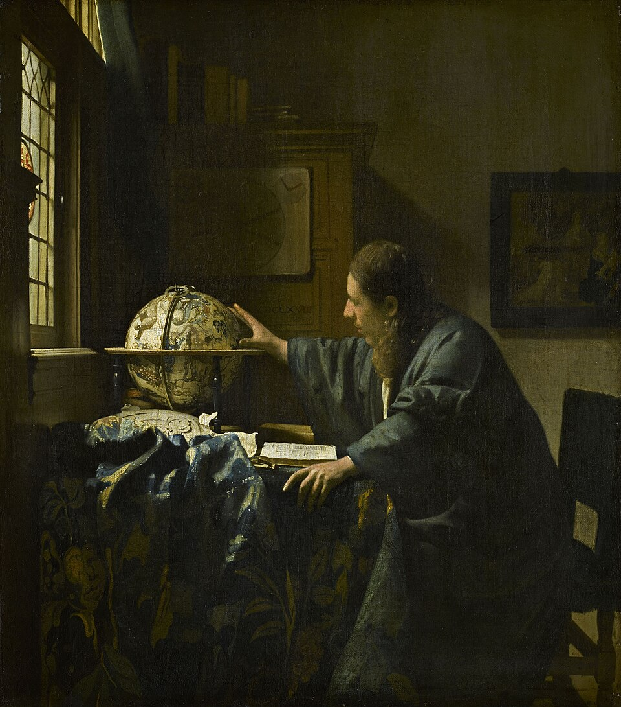
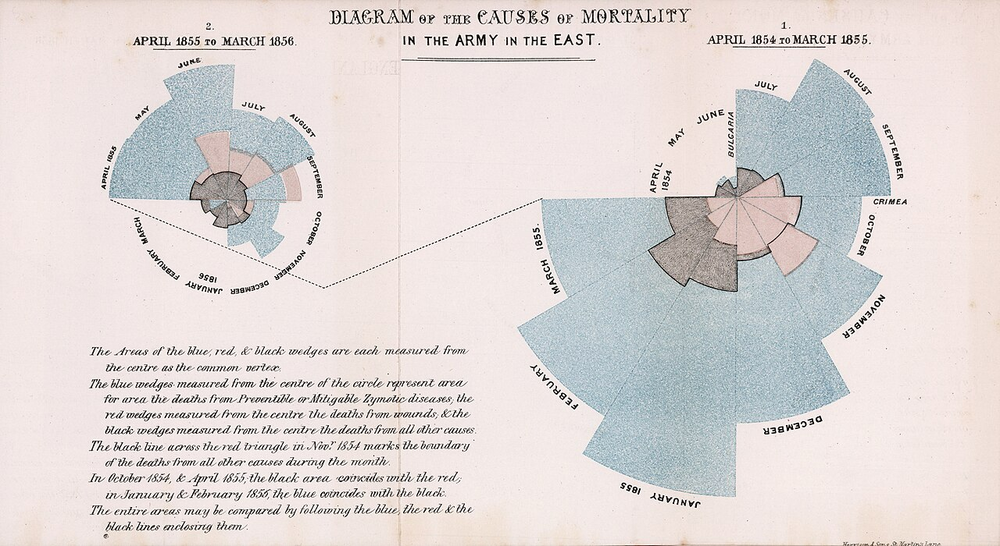
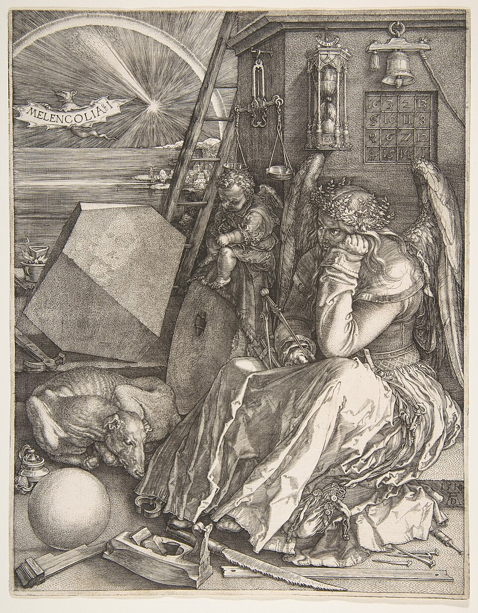
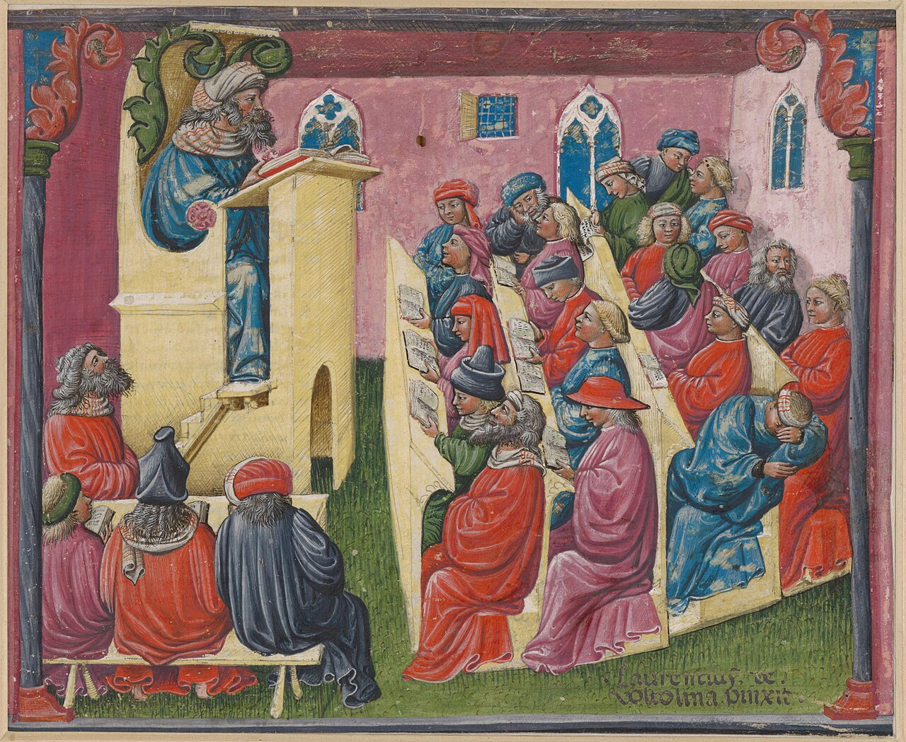

Image creditsCréditos de imágenes
Every image on these pages is one of two kinds. Historical images are in the public domain (or dedicated to it under CC0), and each is credited below to its original creator. Personal images are my own photographs and posters in the Visual work section, and my portrait.
Toda imagen de estas páginas es de uno de dos tipos. Las imágenes históricas son de dominio público (o han sido dedicadas a él bajo CC0), y cada una se acredita abajo a su autor original. Las imágenes personales son mis propias fotografías y afiches de la sección Obra visual, y mi retrato.
My posters are my own designs, built from public-domain images, many of them found through The Public Domain Review.
Mis afiches son diseños propios, hechos con imágenes de dominio público, muchas de ellas encontradas en The Public Domain Review.
Typefaces: titles are set in the IM Fell types, digitized by Igino Marini from the 17th-century types Bishop John Fell left to Oxford; the text is set in Alegreya, by Juan Pablo del Peral (Huerta Tipográfica, Argentina); the triangle on the home page uses Courier Prime, by Alan Dague-Greene. All three are free under the SIL Open Font License and are served from this site.
Tipografías: los títulos están compuestos en las tipografías IM Fell, digitalizadas por Igino Marini a partir de los tipos del siglo XVII que el obispo John Fell legó a Oxford; el texto está compuesto en Alegreya, de Juan Pablo del Peral (Huerta Tipográfica, Argentina); el triángulo de la página de inicio usa Courier Prime, de Alan Dague-Greene. Las tres son libres bajo la SIL Open Font License y se sirven desde este sitio.

Kaninchen und Ente (Rabbit and DuckConejo y pato)
Unknown artist. Fliegende Blätter, 23 October 1892. The earliest known duck–rabbit, later used by Joseph Jastrow (1899) and Ludwig Wittgenstein.Artista desconocido. Fliegende Blätter, 23 de octubre de 1892. El pato-conejo más antiguo que se conoce, luego usado por Joseph Jastrow (1899) y Ludwig Wittgenstein.
Public domain.Dominio público. Wikimedia Commons


The arithmetic triangleEl triángulo aritmético
Zhu Shijie, Siyuan yujian (Jade Mirror of the Four Unknowns), 1303. The triangle is traditionally attributed to Jia Xian and Yang Hui, centuries before Pascal.Zhu Shijie, Siyuan yujian (Espejo de jade de las cuatro incógnitas), 1303. El triángulo se atribuye tradicionalmente a Jia Xian y Yang Hui, siglos antes que a Pascal.
Public domain.Dominio público. Wikimedia Commons


A Purkinje neuron from the human cerebellumUna neurona de Purkinje del cerebelo humano
Santiago Ramón y Cajal (1852–1934), c. 1900. Instituto Cajal (CSIC), Madrid.
Public domain.Dominio público. Wikimedia Commons


Oculus imaginationis (The eye of imaginationEl ojo de la imaginación)
Robert Fludd (1574–1637), from the Ars memoriae in Utriusque Cosmi … Historia, Oppenheim, 1617–21.Robert Fludd (1574–1637), del Ars memoriae en Utriusque Cosmi … Historia, Oppenheim, 1617–21.
Public domain.Dominio público. Wikimedia Commons


Contador mayor y tesorero
Felipe Guaman Poma de Ayala (c. 1535–after 1616), El primer nueva corónica y buen gobierno, c. 1615, p. 360: a khipu keeper (khipukamayuq) with a yupana counting board. Original manuscript at the Royal Danish Library, Copenhagen; image from the 1936 facsimile.Felipe Guaman Poma de Ayala (c. 1535–después de 1616), El primer nueva corónica y buen gobierno, c. 1615, p. 360: un quipucamayoc con su yupana. Manuscrito original en la Biblioteca Real de Dinamarca, Copenhague; imagen del facsímil de 1936.
Public domain.Dominio público. Wikimedia Commons
_p360.png){kind=link}

The CardsharpsLos tramposos (I bari)
Michelangelo Merisi da Caravaggio (1571–1610), c. 1594. Kimbell Art Museum, Fort Worth.
Public domain.Dominio público. Wikimedia Commons
_-_The_Cardsharps_-_Google_Art_Project.jpg){kind=link}

The AstronomerEl astrónomo
Johannes Vermeer (1632–1675), c. 1668. Musée du Louvre, Paris.Johannes Vermeer (1632–1675), c. 1668. Museo del Louvre, París.
Public domain.Dominio público. Wikimedia Commons


Diagram of the causes of mortality in the army in the EastDiagrama de las causas de mortalidad en el ejército de Oriente
Florence Nightingale (1820–1910), in Notes on Matters Affecting the Health, Efficiency, and Hospital Administration of the British Army, 1858. Scan: David Rumsey Map Collection.Florence Nightingale (1820–1910), en Notes on Matters Affecting the Health, Efficiency, and Hospital Administration of the British Army, 1858. Escaneo: David Rumsey Map Collection.
Public domain.Dominio público. Wikimedia Commons


Melencolia I
Albrecht Dürer (1471–1528), engraving, 1514. The Metropolitan Museum of Art, New York (Open Access).Albrecht Dürer (1471–1528), grabado, 1514. The Metropolitan Museum of Art, Nueva York (Open Access).
Public domain, released as CC0 by the museum.Dominio público, liberado como CC0 por el museo. Wikimedia Commons


Henricus de Alemannia lecturing to students in BolognaHenricus de Alemannia dando lección a sus estudiantes en Bolonia
Laurentius de Voltolina, miniature from Henricus de Alemannia's Liber ethicorum, second half of the 14th century. Kupferstichkabinett, Staatliche Museen zu Berlin (Min. 1233).Laurentius de Voltolina, miniatura del Liber ethicorum de Henricus de Alemannia, segunda mitad del siglo XIV. Kupferstichkabinett, Staatliche Museen zu Berlin (Min. 1233).
Public domain (Public Domain Mark applied by the museum).Dominio público (marcado como tal por el propio museo). Wikimedia Commons

TypefacesTipografías
Set in Fraunces (Undercase Type), Source Serif 4 (Frank Grießhammer for Adobe) and IBM Plex Mono (Mike Abbink and Bold Monday for IBM), all under the SIL Open Font License, served by Google Fonts.Compuesto en Fraunces (Undercase Type), Source Serif 4 (Frank Grießhammer para Adobe) e IBM Plex Mono (Mike Abbink y Bold Monday para IBM), todas bajo la SIL Open Font License, servidas por Google Fonts.